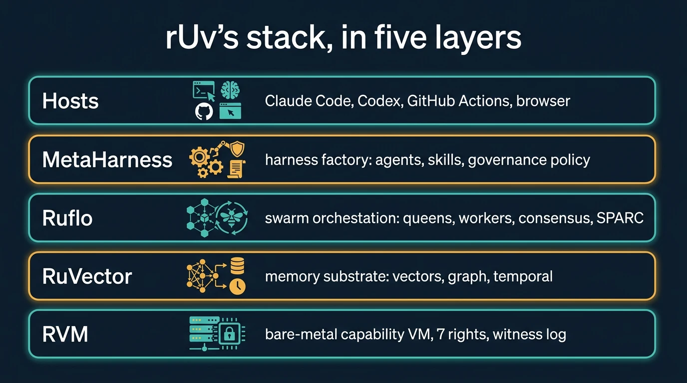

A guide for people who opened github.com/ruvnet and closed it again
Reuven Cohen (rUv) ships fast: Ruflo alone has dozens of commands, and fourteen new repositories appeared in two months. The repos are overwhelming because they are complete. You do not need all of it. This page says what each piece is for, the one command that gets you started, and what to ignore until you need it.

Founder and Chief AI Officer of his own company; creator of the Agentics Foundation (the community that runs the London meetup); earlier founded Enomaly, was Chief Cloud Advocate at Citrix, and an architect of EY.ai. Credited with coining "Agentic Engineer". His positioning: "Sovereign agentic AI, cloud to edge."
Sources: ruv.io (current role), the event listing (Enomaly, Citrix, EY.ai, Agentics Foundation, "Agentic Engineer"), the organisers' welcome deck for 15 Oct (the same roles; EY.ai "used by more than 400,000 people"), github.com/ruvnet, LinkedIn. Star counts below are snapshots from Sep and Oct 2026, not live.
Read the stack bottom-up and each layer answers one question.
flowchart TB H["Hosts
Claude Code · Codex · GitHub Actions · browser
where agents run"] M["MetaHarness
agents, skills, commands, MCP tools, memory namespace, governance policy
how a harness is assembled for a host"] F["Ruflo (formerly Claude Flow)
queens + 8 worker roles, consensus, SPARC, hooks, policy engine, memory
how many agents coordinate"] V["RuVector
vectors + graph + temporal memory, HNSW, WASM, MCP server, witness logs
what agents remember"] R["RVM
bare-metal Rust VMM, capabilities with 7 rights, witness chain, replay
what an agent can physically touch"] H --> M --> F --> V --> R ABP["ABP: the mandate"] -. compiles into .-> F ABP -. compiles into .-> R ABP -. diffs against .-> M VAULT[("sgit vault")] -. keeps, versioned and encrypted .-> V VAULT -. keeps receipts from .-> F
Running many agents against one objective inside Claude Code (or another model host): a queen plans and assigns, workers (coder, tester, reviewer, researcher, documenter, and more) execute, consensus protocols (Raft, BFT, gossip, CRDT, quorum) settle disagreements, hooks learn from outcomes, and a daemon keeps unattended runs going. Per its README: ~71k stars, ~711k npm downloads a month in May.
npx ruflo@3.56.10 --help # 40+ commands; read PRIMARY COMMANDS only
npx ruflo policy status # policy mode: legacy by default (everything allowed)
npx ruflo policy evaluate '{"identity":{"id":"coder-1","type":"agent"},"action":{"type":"email.send"}}'
# → allowed · legacy-default-allow (legacy is the default; enforce mode takes the ABP's rules)
npx ruflo memory init && npx ruflo memory store -k lesson -v "…" -n coder
npx ruflo daemon stop # it auto-starts a daemon; stop it in every scriptneural, performance, autopilot, appliance, plugins (IPFS registry), migrate. They are real, but none is needed to govern or remember. (hive-mind is not on this list: ruv.sgit runs on it.)
@claude-flow/security ships AgenticPolicyEngine: modes legacy, observe, enforce; rules with effect allow / deny / require_approval; budgets; a hash-chained receipt ledger with verifyLedger(). The CLI's policy administration needs an interactive terminal by design; the library engine is the documented programmatic surface, which is what POC1 uses.
Ruflo already has console permission levels, a policy engine with rules, approvals, budgets and a hash-chained receipt ledger, federation trust levels with compliance audit trails, and AgentDB audit trails. What it does not ship is a per-role mandate as a written, human-readable document with an owner and an end date: that is where an ABP fits, compiled into the engine's own rules.
memory export returned 0 entries after a successful store (they read different stores); import failed on a fresh project. Copying the DB files works.The memory substrate under the agents: vector search (HNSW), graph and hypergraph, temporal memory, GNN re-ranking, self-learning (SONA MicroLoRA), builds for WASM and the edge, an MCP server with allow/deny tool lists, hash-linked witness logs, copy-on-write branches and snapshots. Rust at the core, Node and browser bindings.
import init, { VectorDB, version, hnswAvailable } from './vendor/ruvector_wasm.js';
await init();
const db = new VectorDB(128, 'cosine', true); // dim, metric, hnsw
db.insert(new Float32Array(128), 'row-1', {});
db.search(queryVec, 3); // → [{id, score}]
// version() → "2.3.1", hnswAvailable() → true (evidence/wasm-browser.txt)The native CLI (platform binaries; untested on the CI runner), GNN re-rank, SONA. The WASM package is enough to show search over a policy or a memory in a page.
Its README is candid, in a section called “Security and governance”: witnesses and hash-linked logs “do not encrypt memory content”; “collections and metadata filters organize memory; they are not a complete authorization boundary”; replication “exposes local primitives and simulated transport behavior”; and “a delete from the live store does not automatically remove copies in snapshots, branches, replicas, exports, or hosted memory”. It already has snapshots and copy-on-write branching (rvf derive). POC2 adds an sgit vault around the memory files: encrypted on the client, a history shared across machines, branched per agent, cloned anywhere.
A virtual machine monitor for agents with no ambient authority: everything an agent touches is a capability with some of seven rights (READ, WRITE, GRANT, REVOKE, EXECUTE, PROVE, GRANT_ONCE), mutations are proof-gated, and a hash-chained, signed witness log allows deterministic replay.
Do not build it tonight; it is bare-metal Rust. Read the capability model and map your policy onto the seven rights first. That table is POC3, generated from the ABP.
Rights are coarser than mandates: EXECUTE covers both a sandboxed test run and an email send. The token says what; the ABP keeps why, who owns it and until when. Compile tokens from the mandate, not the other way round.
A factory for agent harnesses: give it a vertical template (agentics, coding, crm, legal, trading, ...) and a host (Claude Code, Codex, GitHub Actions, RVM, ...) and it scaffolds agents, skills, commands, MCP wiring, a memory namespace and host permission settings. It can score a repository (fit, cost, safety), analyse it, and in "Darwin mode" evolve its own configuration.
npx metaharness@0.4.17 --help
npx metaharness rm-agentics --template vertical:agentics --host claude-code --no-darwin --target out/poc5/harness
# → 18 files: .claude/settings.json (allow/deny), CLAUDE.md, 4 agents, 2 skills, a doctor command, a signed manifest
npx metaharness score . --json # this repo: harnessFit 63, toolSafety 95, est. $0.048 per runDarwin mode, GEPA learning runs, the proxy sidecar, wasm crates. The scaffold and the scorecard are the useful first hour.
The scaffold for this template and host emitted a permission allow/deny list and prose rules; it did not emit the governance policy document, deny-by-default statement, timeouts or audit flag that the package README describes. POC5 renders what it did emit as an ABP and diffs it against ours, both ways.
Camera-free WiFi sensing (presence, pose, vital signs). Research; his most-starred repo (~92k). Not part of this story.
Multi-model agent runtime and router; Ruflo's "other models" path.
The agent database Ruflo's memory sits on (HNSW indexing); you see it as .swarm/agentdb-memory.db.
Specification, Pseudocode, Architecture, Refinement, Completion: the workflow Ruflo's swarms follow.
Neural networks in Rust, the ancestor of the "neural" commands.
An open harness in the Claude Code shape; one of the hosts MetaHarness targets.
Fair note: some of this is now also in Claude Code itself (subagents, plugins, hooks), and Ruflo plugs into Claude Code as a plugin or MCP server. The innovation rate is the point.
| Project | What its own docs say | What fills it | Proof |
|---|---|---|---|
| RuVector | Per its README: witnesses do not encrypt memory content; filters are not a complete authorization boundary; replication on simulated transport; deletes do not reach snapshots, branches or replicas (it has snapshots and copy-on-write branching) | sgit vault around its files: client-side AES-256-GCM, a history shared across machines, branch and merge, clone anywhere, deleted with the run; an ABP for who may do what | POC2 |
| Ruflo | Anti-drift pins the spec; deviations become votes; default policy mode is legacy (allow all) | ABP per queen and worker: reach, mandate, gap, barrier, owner; compiled into the engine's enforce mode | POC1 |
| MetaHarness | Ships "a governance policy" per harness (host settings) | ABP is that policy as a document a CISO or insurer reads; the harness is one of its enforcers | POC5 |
| RVM | Capabilities and witness logs enforce reach | ABP says why each right was granted; tokens are the compiled form | POC3 |
| Learning loops (SONA, ReasoningBank, Darwin) | Behaviour changes over time | Versioned ABPs and vault history show what changed, when; roll back a learned pattern | use case 5 |
flowchart TD
Q1{"More than one agent
on one task?"} -- yes --> RF["Ruflo: swarm + SPARC + hooks"]
Q1 -- no --> Q2
RF --> Q2{"Must it remember
across runs or machines?"}
Q2 -- yes --> RV["RuVector or Ruflo memory
+ an sgit vault for history and encryption"]
Q2 -- no --> Q3
RV --> Q3{"Must you prove
what it was allowed to do?"}
Q3 -- yes --> ABP["Write an ABP per role; compile it:
Ruflo policy engine today, RVM rights when you go bare-metal"]
Q3 -- no --> Q4
ABP --> Q4{"Several hosts
(Claude Code, Codex, CI)?"}
Q4 -- yes --> MH["MetaHarness scaffold per host;
diff its settings against the ABP"]
Q4 -- no --> DONE["Start with Claude Code + Ruflo as MCP;
add the rest when a use case needs it"]
MH --> DONE